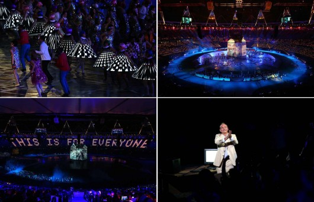
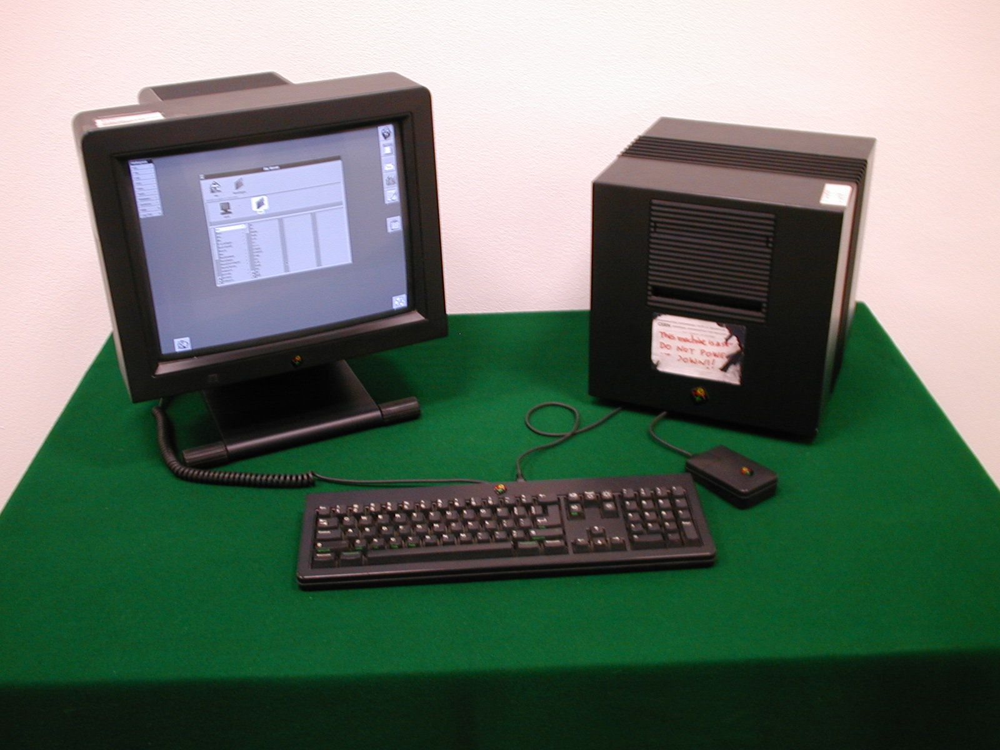
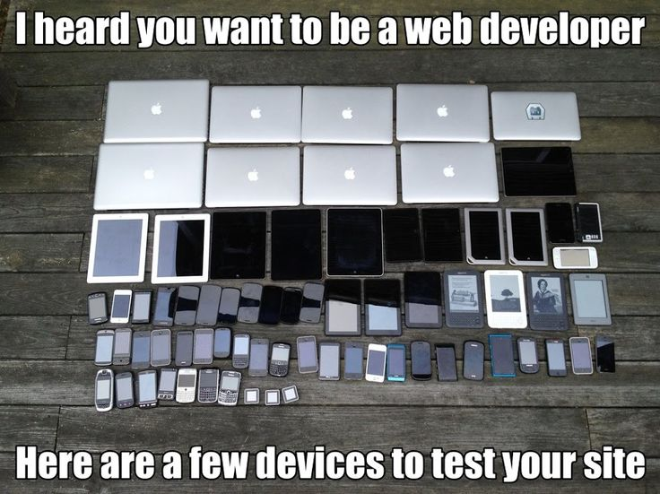
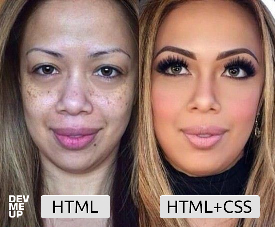

Universidad Nacional Experimental Del Táchira
Decanato De Docencia
Dpto. Ingeniería Informática
Desarrollo Web
Programación II (Cod. 0415405T)
Temas a tratar
- Conocer la web como plataforma de desarrollo.
- Breve historia de la web.
- Conocer como hacer aplicaciones web con HTML/JS/CSS.
- Desarrollo aplicaciones web utilizando las últimas tendencias.
Conocimientos previos
- Uso de Internet
- Conceptos básicos programación básica
- Conocimientos básicos sobre comunicación en red.
- Definición de un intérprete.
Objetivo de la clase
- Aprender como funciona la web como plataforma.
- Conocer como se definen los estándares web.
- Desarrollo de aplicaciones web utilizando HTML, CSS y Javascript.
¡Comencemos!
Introducción
- ¿De que forma sueles acceder a Internet?
- ¿Cómo suelen enviar los correos, buscar información?
- ¿Cómo realizas actividades de la vida cotidiana como transferencias, inscribirte en la UNET, ver notas?
- ¿Cómo funcionan las compras en línea?
Historia

El mismo de las olimpiadas del 2012
Historia
- Escribió una propuesta en 1989 que se convertiría en la web.
- Su idea era crear una red global de documentos en Internet.
- Junto con Robert Cailliau, crearon el primer navegador:WorldWideWeb.
Primer servidor web
Primer servidor web corriendo en NeXT Cube
WorldWideWeb

WorldWideWeb el primer navegador web
World Wide Web Consortium
- Organización que controla los estándares web.
- Creada y liderizada por Tim Berners Lee.
- Intenta forzar compatibilidad entre navegadores.
- Comité compuesto por representantes de varias empresas.
- Provee educación sobre la web.
Etapas de la especificación (1/2)
- Working Draft (WD): es un resumen que propone distintas características y funcionalidades. Generalmente propuesto por un representante para ser evaluado por el resto.
- Candidate Recommendation (CR): cumple con todo lo que debería hacer según el autor.
Etapas de la especificación (2/2)
- Proposed Recommendation (PR): posee varias implementaciones que generan retroalimentación, se corrige hasta ser enviado a la W3C para su revisión.
- W3C Recommendation: se recomienda a todos realizar la implementación.
La plataforma web
¿Quieres ser desarrollador web?
Respuesta
HTML
Afirmaciones sobre HTML
- Actualmente a HTML5 se le conoce simplemente como HTML.
- No es un lenguaje de programación.
- No incluye JavaScript ni CSS.
- Actualmente se asume que funciona en cualquier dispositivo.
- HTML hace ver las aplicaciones parecer nativas.
HTML
- Lenguaje de marcado para la definición de información.
- Posee elementos semánticos para dar mayor significado a las distintas partes de un documento.
- Sintaxis flexible: uso opcional de comillas, cierre de tags, entre otros.
- Compuesto de múltiples APIS: WebStorage, Drag and Drop, Canvas, multimedia nativo.
HTML
<!DOCTYPE html>
<html>
<head>
<meta charset="UTF-8">
<title>Título del documento</title>
</head>
<body>
Contenido del documento
</body>
</html>
Estructura básica de un documento HTML
CSS
Cascading Style Sheets
CSS
- Creado en 1994 por Håkon-Wium-Lie (Ex-CTO de Opera Software).
- Separa el contenido de la presentación.
- Describe apariencia y formato de un documento escrito en lenguaje de marcado.
- Estándar mantenido por la W3C.
CSS
/*Elemento con el tag <div> */
div {
border: 1px solid #fff;
padding: 10px;
}
/*Indica un elemento con clase menu*/
.menu {
background: green;
display: block;
}
/*Indica un elemento con id="logo" */
#logo { margin: 0 auto; border: 0; }
Ejemplo de un código CSS
¿Cómo es trabajar con CSS?

¿Qué es HTML y CSS?
HTML vs HTML + CSS
{kind=link}
Javascript
Javascript (1/2)
- Creado por Brendan Eich para Netscape en 1995.
- Inicialmente servía para ejecutar código del lado del cliente.
- Ahora también se utiliza en el lado del servidor gracias a NodeJS.
Javascript (2/2)

- Ahora también se utiliza en el lado del servidor gracias a NodeJS.
- Especificado por ECMA-262
- Multiparadigma, sirve como: funcional, orientado a objetos, imperativo.
Aplicaciones Web
Hoy se pueden crear casi cualquier aplicación usando
HTML + CSS + JS.
La unión de las 3 tecnologías no es HTML5 sino que componen la plataforma web